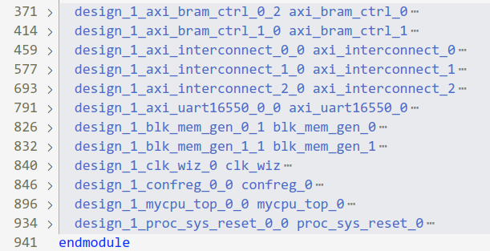
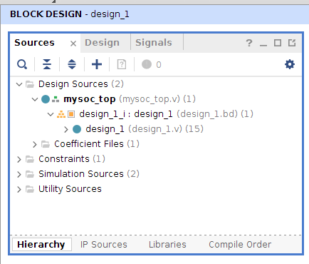
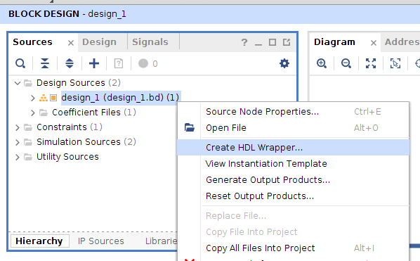
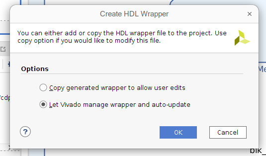

Lec 04 - SOC 上板与系统启动
上板测试 SOC
经过上一讲的学习，我们已经搭建好 SOC 的结构，想要让我们的 SOC 能够综合、实现并最终生成比特流文件，我们还缺少两个文件：项目 wrapper 文件和约束文件。下面分别进行介绍。
创建 wrapper
在 mysoc/mysoc.srcs/sources_1/bd/design_1/synth 这个目录下，我们能找到名为 design_1.v 的文件，可以看到其中的 design_1 模块实例化了所有放到 BD 中的 IP ：

然而在现在这个状态下，整个模块是无法综合的。我们需要写一个 wrapper 作为顶层文件。wrapper 需要包含以下几点要素：
- 设计顶层 wrapper 模块的 input、output 信号，使它们在信号名和位宽上和约束文件中的内容匹配；
mysoc_top.v
module mysoc_top( input clk, ... // 使用我们习惯的方式命名 // 而不是 design_1 中生成的 led_0、uart_rtl_xxxx // 方便与约束文件的信号名匹配 output [15:0] led, ... ); ... endmodule - 实例化
design_1，并对design_1的输入输出信号做必要处理。mysoc_top.vmodule mysoc_top( ... ); design_1 design_1_u( .clk_in1_0 (clk), ... .led_0 (led), ... ); endmodule
注意
由于当前 mysoc 结构较为简单，没有复杂的外设，因此在 mysoc_top 中我们只进行简单的连线即可。但随着 mysoc 中外设复杂度的提升，可能有一些外设接口类型为 inout。这时，由于在 Block Design 中使用 Make External 引出的信号只能是单向的，从而无法满足实际要求。对于这种情况，wrapper 中还需手动处理相应信号。
通过在 Vivado 中 Add Sources，我们将这个文件添加到工程中来。它将被自动识别为顶层文件。

vivado生成 wrapper
当然，也可以由 Vivado 先替我们生成一个 wrapper 文件，实例化好 design_1 模块，我们再在其中做修改。因为是 Vivado 生成的，所以不可避免还会出现信号名复杂、信号待处理的情况，还需要我们手动修改，只不过它帮助我们例化好模块了，在其基础上修改可以提高一定的代码准确度。
按照下图进行操作： 

约束文件
对于一个完整的 FPGA 设计，还需要有时序约束和管脚约束。这些约束都体现在以 .xdc 为后缀的约束文件当中。这里以体系结构实验环境提供的约束文件（mycpu_env/soc_axi/run_vivado/constraints/soc_lite_top.xdc）为例来简单讲解。
-
时序约束，比如设置 SOC 时钟频率，上升沿、下降沿位置等。下面这行约束说明我们的时钟周期是 10ns，上升沿在 0ns 处，下降沿在 5ns 处，这条属性绑定在 clk 信号上。
soc_lite_top.xdccreate_clock -period 10.000 -name clk -waveform {0.000 5.000} [get_ports clk] -
管脚约束，把信号和 FPGA 上的引脚绑定起来，规定管脚的电平标准。
下面约束表示把
led[0]信号绑定到K23引脚上。soc_lite_top.xdcset_property PACKAGE_PIN K23 [get_ports {led[0]}] set_property PACKAGE_PIN J21 [get_ports {led[1]}] set_property PACKAGE_PIN H23 [get_ports {led[2]}] ...下面约束表示
led[]信号所在引脚的电气标准为LVCMOS33。soc_lite_top.xdcset_property IOSTANDARD LVCMOS33 [get_ports clk] set_property IOSTANDARD LVCMOS33 [get_ports resetn] set_property IOSTANDARD LVCMOS33 [get_ports {led[*]}] ...我们需要确保
get_ports后的信号和 SOC 顶层文件的输入输出端口匹配。
请注意，约束条目是有先后顺序的，每一行是一条指令，Vivado 按照行序从前往后读取，所以越后面的指令，其优先级越高。当有 2 条指令约束同一个东西时，后面指令会因为执行的比较晚，而覆盖前一条目。推荐的 .xdc 文件组织方式一般是把时序约束放在前面，而把管脚约束放在后面。同时指令的语法要求严格，不要漏掉或多添加空格，否则会警告“不支持的命令”，有需要的同学可以自行查找资料。
体系结构课提供的约束文件仅包含 Lec 02 中提到的简单外设，更多如 UART、SPI flash 的约束信息也不需要同学们自己来写，可以在大赛发布包中的约束文件中找到。
同时，在团体赛发布包中还提供了有关 FPGA 引脚关系的 Excel 文件，在这个文件中能够更详细地了解管脚与信号的对应关系，大家可以自行阅读。
mysoc 的启动过程
目前 mysoc 中具有的设备及其地址映射关系如下：
| 序号 | 名称 | 地址空间 | 大小 | 类型 |
|---|---|---|---|---|
| 1 | Boot ROM | 0x1c00_0000~0x1c00_7fff |
32KB | MEM |
| 2 | RAM | 0x1c00_8000~0x1c00_ffff |
32KB | MEM |
| 3 | confreg | 0xbfaf_0000~0xbfaf_ffff |
64KB | REG |
Boot ROM 的地址空间起始位置即为 LoongArch32r 的复位 PC，这就意味着 mycpu 复位后的第一条指令是从 Boot ROM 中取出的。但由于 Boot ROM 是只读的，因此我们编写的程序无法在 Boot ROM 中正确运行。也就是说，Boot ROM 中的前几条指令应该负责将程序中需要初始化且带有“写”属性的数据节（section）拷贝到 RAM 中。
链接脚本
我们通过修改链接脚本来对裸机程序重新进行布局。首先需要先分析程序中现有的 sectoin。
程序中的节
目前裸机程序中的节信息可以通过 readelf 命令查看：
$ loongarch32r-linux-gnusf-readelf -a build/main.elf
...
Section Headers:
[Nr] Name Type Addr Off Size ES Flg Lk Inf Al
[ 0] NULL 00000000 000000 000000 00 0 0 0
[ 1] .text PROGBITS 1c000000 004000 000a28 00 AX 0 0 4
[ 2] .got PROGBITS 1c000a28 004a28 00001c 04 WA 0 0 4
[ 3] .data PROGBITS 1c008000 008000 000090 00 WA 0 0 4
[ 4] .eh_frame PROGBITS 1c008090 008090 000460 00 WA 0 0 4
[ 5] .comment PROGBITS 00000000 0084f0 000011 01 MS 0 0 1
[ 6] .symtab SYMTAB 00000000 008504 000320 10 7 25 4
[ 7] .strtab STRTAB 00000000 008824 000215 00 0 0 1
[ 8] .shstrtab STRTAB 00000000 008a39 00003f 00 0 0 1
...
上面的输出中共显示了 8 个有效的 section，运行程序只需要关心 .text，.got 和 .data 即可。观察到 Flg 一列显示了各个段的读写属性，其中 .text 是只读的，.got 和 .data 都是可读写的，而根据 .got 的作用，程序不会对它进行写操作，可以认为它也是只读的。因此，对于 .text 和 .got 可以保留在 ROM 中，而 .data 必须移动到 RAM 中。
注意
上面输出的表格中没有我们熟悉的 .bss，这是因为目前程序比较简单，没有使用未初始化的全局变量。但是在链接脚本中需要将其显式地写出,同时在启动代码中清除 .bss 节的内容,为未来的程序做准备。
节的 LMA 和 VMA
对于一个节来说，它具有两个地址：加载地址（LMA, Load Memory Address）和虚拟地址（VMA, Virtual Memory Address）。如果一个变量所在的 LMA 为 0x1c000030，而 VMA 为 0x1c008030，那么表示它在系统初始化时位于地址 0x1c000030，而之后想要访问这个变量则通过地址 0x1c008030。
为什么要区分这两个地址呢？在 mysoc 中，程序的所有节都被提取到 .coe 文件中，并固化到了 Boot ROM，因此所有节的 LMA 都落在 Boot ROM 对应的地址段 0x1c000xxx 中。对于 .text 和 .got 节，由于它是只读的，因此无需将其拷贝到 RAM，从而 VMA = LVM；而对于 .data 和 .bss 节的数据，我们需要在启动代码中将其拷贝到 RAM 中，因此它们的 VMA 落在 RAM 对应的地址段 0x1c008xxx。
| 节名称 | 读写属性 | LMA | VMA |
|---|---|---|---|
.text |
只读 | 0x1c000xxx |
0x1c000xxx |
.got |
读写 | 0x1c000xxx |
0x1c000xxx |
.date |
读写 | 0x1c000xxx |
0x1c008xxx |
.bss |
读写 | 0x1c000xxx |
0x1c008xxx |
MEMORY 指令
在链接脚本中使用 MEMORY 指令可以为地址空间（memory region）定义名称和读写属性，它的语法为：
MEMORY
{
<name> [(<attr>)] : ORIGIN = <origin>, LENGTH = <len>
<name> [(<attr>)] : ORIGIN = <origin>, LENGTH = <len>
...
}
<name>表示某个地址空间的名称<attr>是可选项，表示该地址段的属性<origin>指定了该地址空间的起始地址<length>指定了该地址空间的长度
对于 mysoc 的地址空间布局，可以定义如下：
MEMORY
{
ROM (rx) : ORIGIN = 0x1c000000, LENGTH = 32K
RAM (rw) : ORIGIN = 0x1c008000, LENGTH = 32K
}
这里我们将地址空间的布局单独存储到了文件 mysoc.ld 中，在 bare-metal.ld 中，可以通过 INCLUDE 指令添加包含的文件：
INCLUDE mysoc.ld
ENTRY(_start)
...
绑定节的 LMA 与 VMA
在链接脚本中对于某个节的 LMA 和 VMA 进行绑定的方法有很多种，这里只展示一种：
<section> : [AT(<lma>)]
{
...
} [><region>]
<section>为某个节的名称AT(<lma>)为可选项，用于绑定 LMA，<lma>为具体想要绑定的地址[><region>]为可选项，用于绑定 VMA，<region>为一个通过MEMORY指令定义的地址空间名称
对于 mysoc 的地址空间布局和裸机程序分节，可以在链接脚本中做如下绑定：
SECTIONS
{
.text : {
*(entry)
*(.text)
} > ROM
.got : {
*(.got)
} > ROM
.rodata : {
*(.rodata)
__rodata_end = .;
} > ROM
.data : AT(__rodata_end) ALIGN(0x4) {
__data_start = .;
*(.data)
} > RAM
__data_size = SIZEOF(.data);
__data_load_start = LOADADDR(.data);
.bss : ALIGN(0x4) {
__bss_start = .;
*(.bss)
__bss_end = .;
} > RAM
}
上面的链接脚本使用了一些关键字：
ALIGN(<alignment>)：设置整个段的对齐字节数SIZEOF(<section>)：获取某个段的大小LOADADDR(<section>)：获取某个段的 LMA
可以在链接后的 elf 文件中找到上面链接脚本中标号的值：
Symbol table '.symtab' contains 52 entries:
Num: Value Size Type Bind Vis Ndx Name
25: 00000090 0 NOTYPE GLOBAL DEFAULT ABS __data_size
29: 1c000a44 0 NOTYPE GLOBAL DEFAULT 2 __rodata_end
32: 1c000a44 0 NOTYPE GLOBAL DEFAULT ABS __data_load_start
33: 1c008090 0 NOTYPE GLOBAL DEFAULT 4 __bss_end
41: 1c008090 0 NOTYPE GLOBAL DEFAULT 4 __bss_start
50: 1c008000 0 NOTYPE GLOBAL DEFAULT 3 __data_start
其中 __rodata_end 等于 __data_load_start 都指向了 Boot ROM，其他标号都指向了 RAM。
启动代码
相较于 Lec 02 中的启动代码，现在它需要多做一件事，即将 __data_load_start 到 __data_load_start + __data_size 之间的 .data 节从 Boot ROM 拷贝到 __data_start 到 __data_start + __data_size 对应的 RAM 中。
| start.S | |
|---|---|
1 2 3 4 5 6 7 8 9 10 11 12 13 14 15 16 17 18 19 20 21 22 23 24 25 26 27 28 29 30 31 32 33 | |
拷贝代码
| boot.S | |
|---|---|
5 6 7 8 9 10 11 12 13 14 15 16 17 18 | |
代码的第 7 ~ 18 行完成了拷贝工作。__data_start 和 __data_size 是两个链接脚本中的标号，分别指向了 .data 的 VMA 和大小。而后将 __data_start 加上 __data_size 得到 .data 节在 RAM 中的结束地址。$t2 的值为 __data_load_start，也就是得到了 Boot ROM 中的开始位置。
第 11 ～ 18 行之间的循环先将 Boot ROM 中的数据 load 出来，然后再存入 RAM 中。
注意
注意到拷贝循环中 $t0 和 $t2 的增量均为 4，并且 ld/st 指令访存宽度也均为 4B。这样做是为了提高拷贝速度，也是在链接脚本中将 .data 对齐到 4 字节的原因。
汇编指导
| start.S | |
|---|---|
1 2 3 | |
除了代码发生改变，start.S 的 1 ～ 3 行也发生了一些变化：
- 首先，使用
.secion entry创建了一个名为entry的段，这样我们就可以在链接脚本中手动地将该段添加到所有代码的最前面 - 其次 ，使用
.type _start, @function声明_start是一个函数，这样在反汇编文件中仍然能看到_start